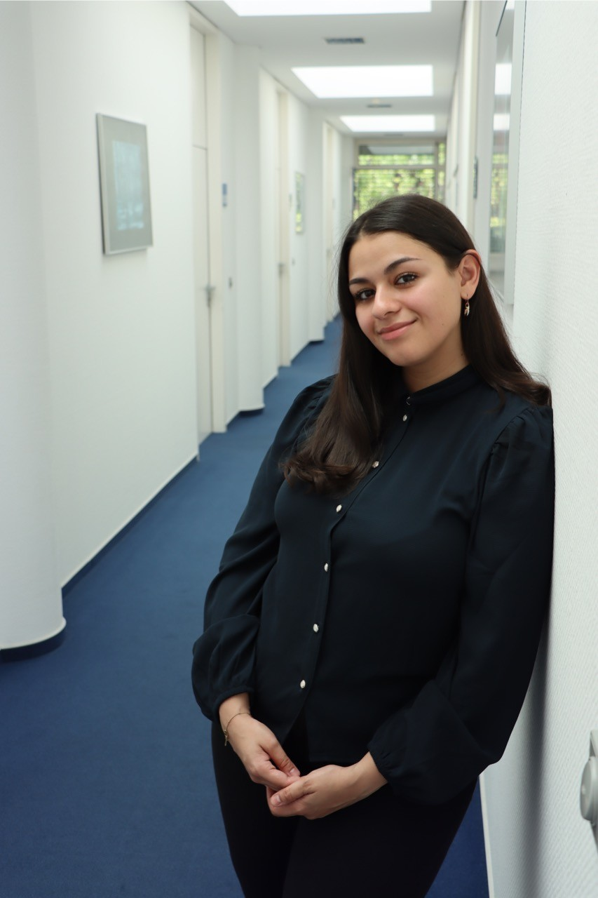
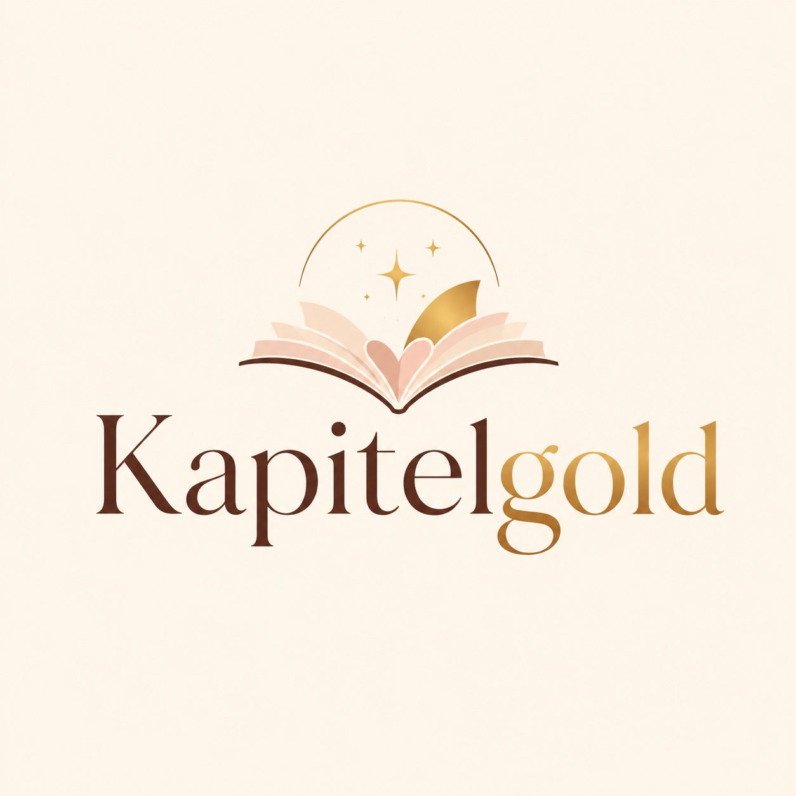
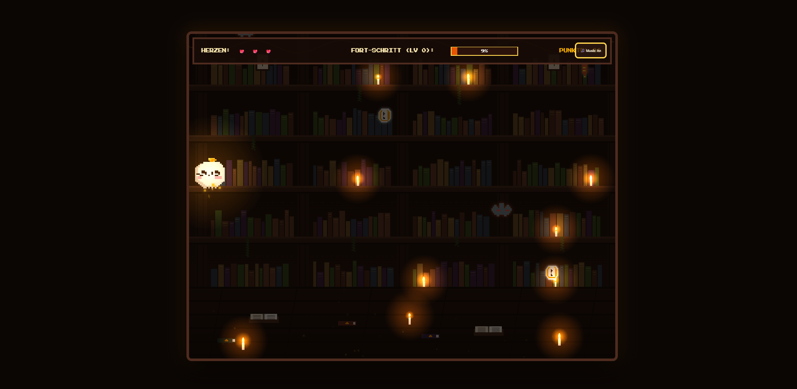
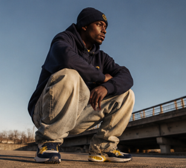
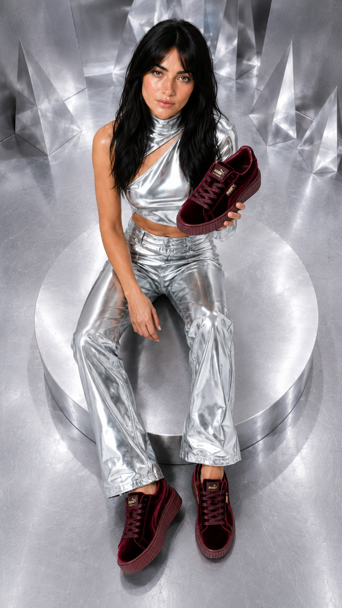
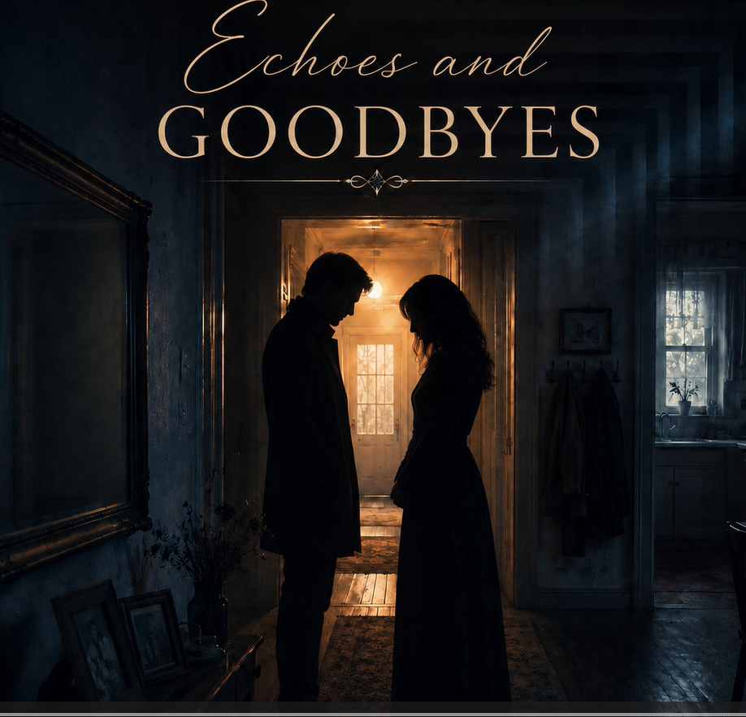

Redaktion & Text
Recherche, Fachtexte, Interviews und verständliche Aufbereitung komplexer Themen.
Redaktion · Social Media · KI-Content
Mein Portfolio verbindet redaktionelle Erfahrung aus dem Fachverlag mit modernen Content-Projekten: von Interviews, Fachtexten und Newslettern über Social-Media-Kampagnen bis zu KI-gestützten Videos, Bildwelten, Musik- und Website-Konzepten.

Kompetenzen
Meine Arbeit verbindet Sprache, Struktur, Zielgruppenverständnis und kreative Medienformate.
Recherche, Fachtexte, Interviews und verständliche Aufbereitung komplexer Themen.
Content-Ideen, Redaktionspläne, Zielgruppenansprache und Kampagnenentwicklung.
KI-Bildwelten, Videos, Website-Konzepte und kreative Workflows.
Website-Struktur, Markenwelten, Projektseiten und Nutzerführung.
Projekte
Projekte aus Redaktion, Content Creation, KI und digitalen Medienkonzepten.
Redaktion · Fachjournalismus · Content Creation
Arbeitsproben aus dem Fachverlag — mit Recherche, Fachtexten, Interviews, Online-Meldungen, Newslettern und Magazinplanung.
Projekt ansehen →
KapitelgoldKI · Social Media · Kampagne
Fiktives Social-Media-Konzept für eine New-Adult-Lesung in Mainz, mit Zielgruppe, Content-Säulen und Redaktionsplan.
Projekt ansehen → Website-Konzept
Website-Konzept
KI · Website · Branding
KI-gestützte Website für einen fiktiven Buchladen in Mainz, mit Markenwelt, SEO-Struktur, Goldi und Eventbereich.
Projekt ansehen →
SpielprototypKI · Game Design · Prototyping
Spielbarer 2D-Cozy-Arcade-Prototyp im Retro-Pixelart-Stil — entwickelt mit ChatGPT, Gemini und Ludo.ai.
Projekt ansehen →
PUMA ImagefilmKI · Imagefilm · Video
Fiktiver KI-Imagefilm im 16:9-Format — von der Konzeptidee über Bild- und Videogenerierung bis zum finalen Schnitt.
Projekt ansehen →
Fenty x PUMAKI · Produktvideo · Social Media
Fiktives KI-Produktvideo im 9:16-Format — entwickelt für eine moderne Social-Media-Inszenierung.
Projekt ansehen →KI · Bildserie · Storytelling
KI-gestützte Bildserie über eine Journalistin im Laufe ihrer Jahre — mit rotem Faden und visueller Weiterentwicklung.
Projekt ansehen →
Echoes and GoodbyesKI · Musik · Songwriting
KI-gestütztes Musikprojekt mit Konzept, Songtext-Bearbeitung und mehreren Versionen eines fertigen Musikstücks.
Projekt ansehen →Arbeitsweise
Ich analysiere Zielgruppe, Kontext und Botschaft, bevor Inhalte entwickelt werden.
Aus Ideen entstehen klare Konzepte, Redaktionspläne und nachvollziehbare Projektstrukturen.
Texte, Bilder und digitale Inhalte werden verständlich, visuell stimmig und zielgerichtet umgesetzt.
Zum Schluss werden Inhalte auf Klarheit, Wirkung und Nutzerführung optimiert.
Kontakt
Ich freue mich über Kontakte, Projekte und Möglichkeiten im Bereich Redaktion, Social Media und digitale Kommunikation.
E-Mail schreiben